A native Mac launcher that knows which agent is waiting. 原生 Mac 启动器，知道哪个 agent 在等你。
Find apps by pinyin, search your clipboard, read text from screenshots, translate with your own model, and jump straight to the Claude Code or Codex session that needs you. Written in Rust with GPUI. No account, no telemetry.
拼音搜应用、翻剪贴板、截图识字、用你自己的模型翻译，还能一键跳到正在等你的 Claude Code / Codex 会话。Rust + GPUI 原生编写，不用登录，没有遥测。
- macOS 15 or latermacOS 15 及以上
- Signed & notarized签名并公证
- MIT licensedMIT 协议
- Free and open source免费开源
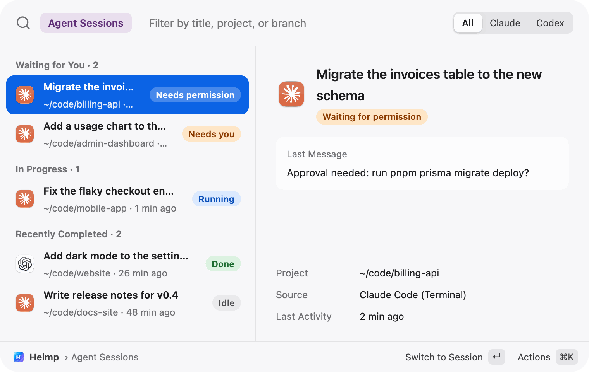
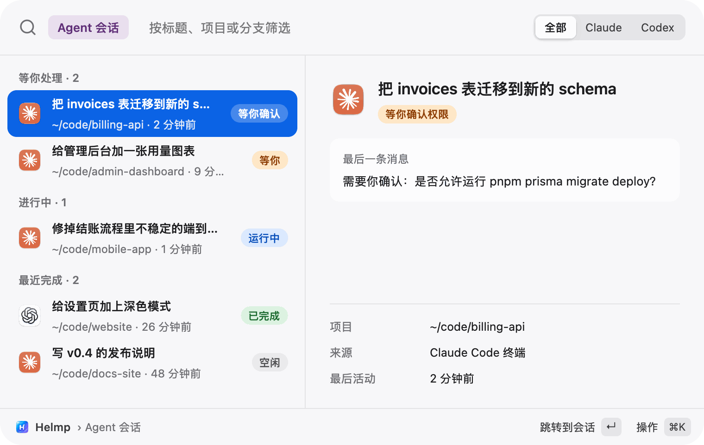
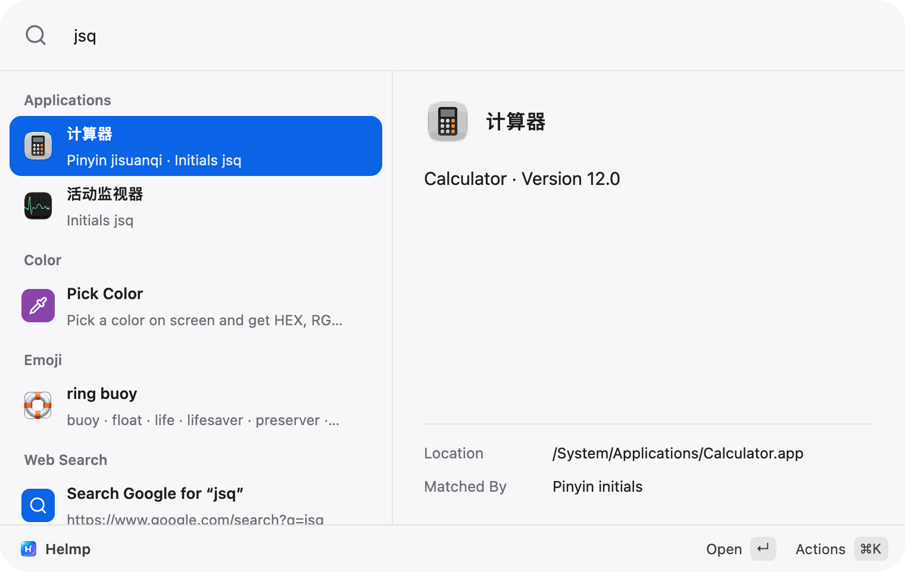
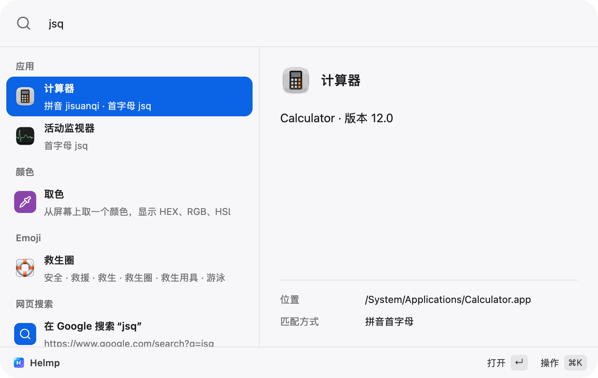
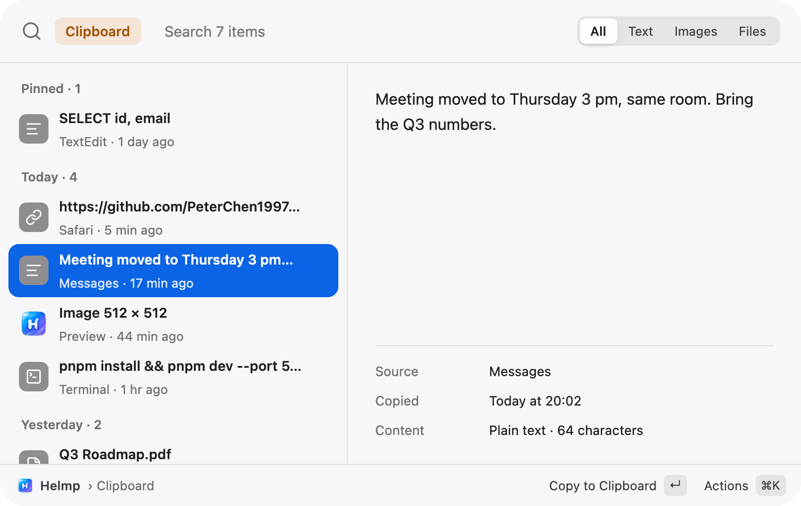
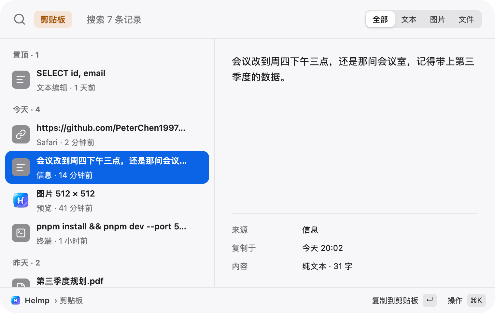
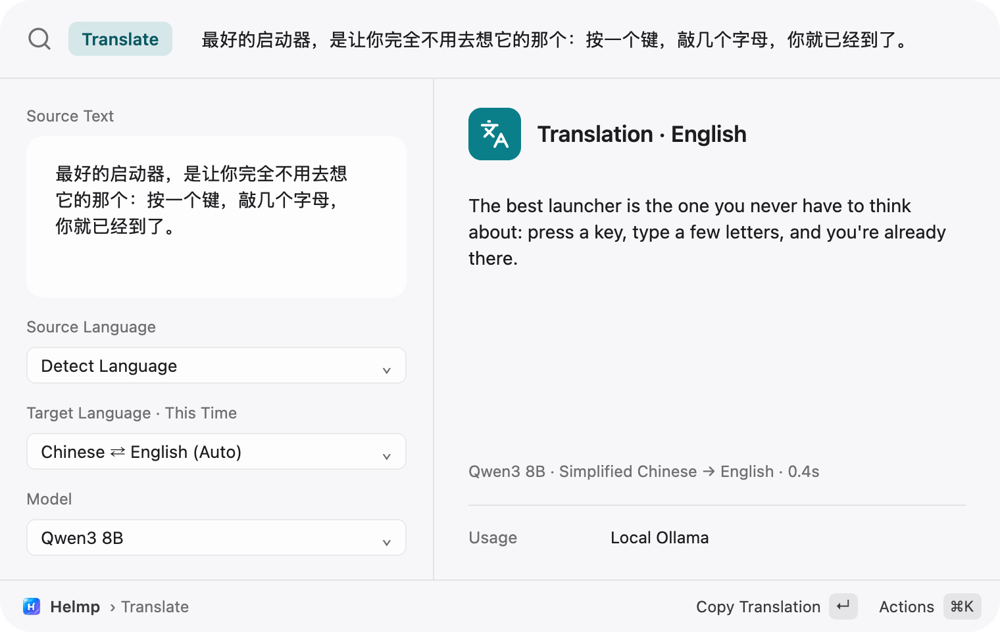
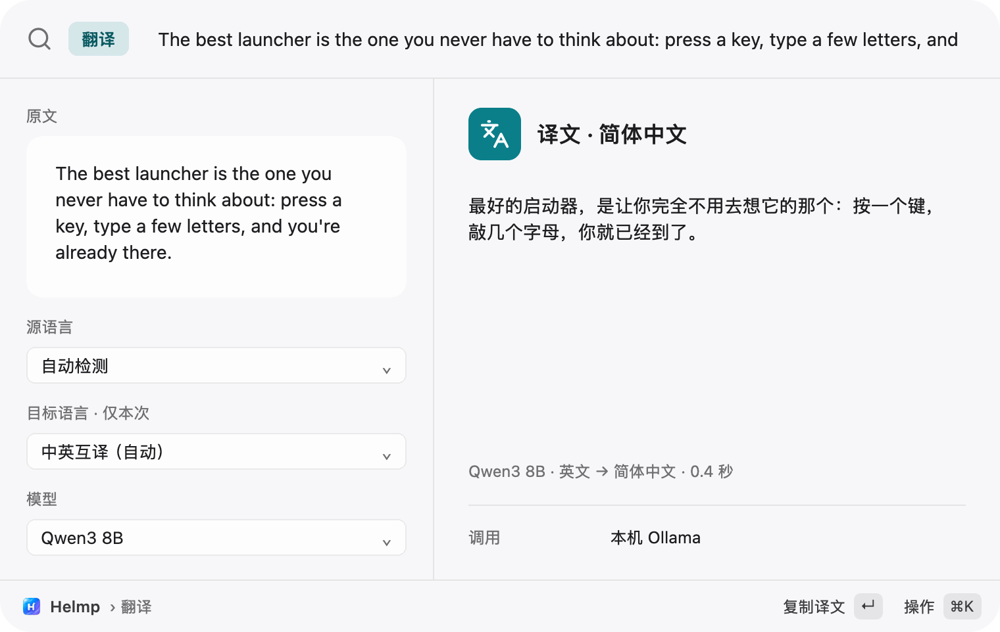
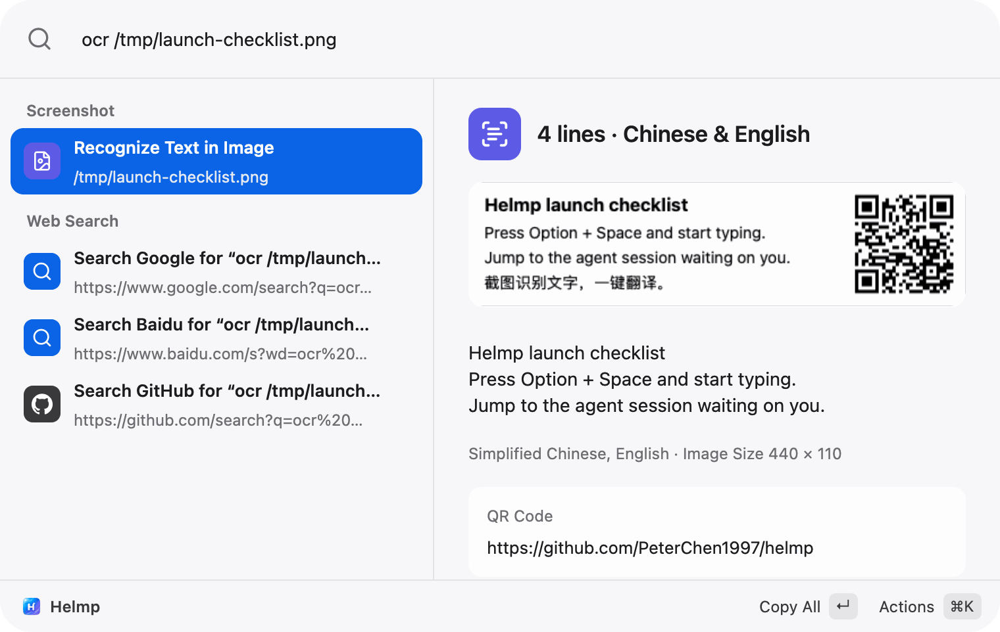
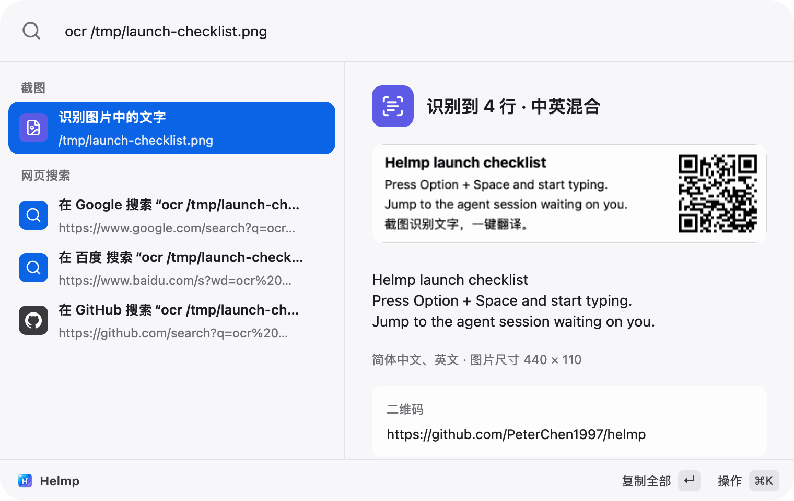
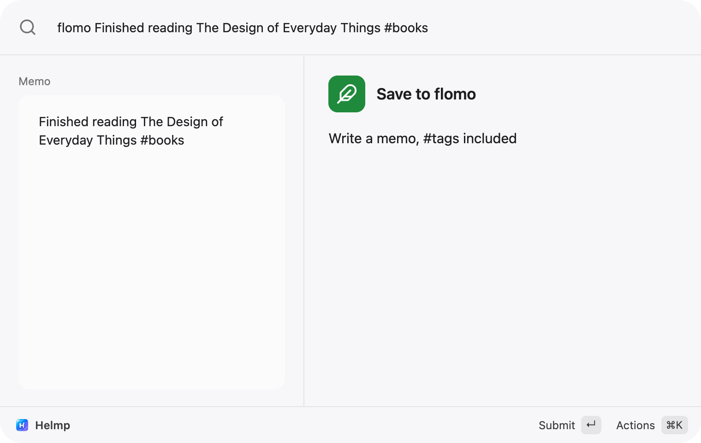
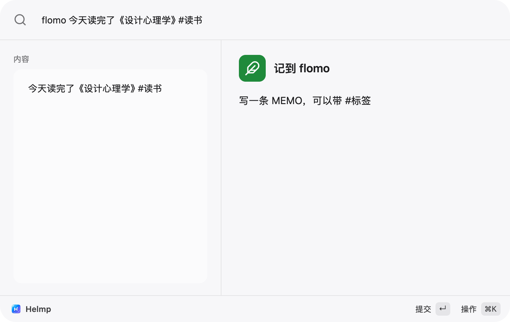
Type ag and a space, or press ⌃⌥A. Claude Code and Codex sessions are grouped into waiting for you, running and recently finished. Return jumps to the exact terminal tab or desktop app. 输入 ag 加空格，或按 ⌃⌥A。Claude Code 和 Codex 的会话按「等你处理 / 进行中 / 最近完成」排好，回车直接跳到对应的终端标签页或桌面 App。
Type jsq, the pinyin initials of 计算器, and Calculator comes first. English names, Chinese names, full pinyin and initials all work. 输入 jsq，「计算器」排第一。英文名、中文名、全拼、首字母都能搜，详情里写明这次是怎么匹配上的。
Press ⇧⌘V for clipboard history: text, images and files, kept on your Mac with no limit, grouped by day, pinned items first. 按 ⇧⌘V 打开剪贴板历史：文本、图片、文件，只存在本机、不限条数，按天分组，置顶的排最前。
Press ⌥⇧T to translate the selected text with your own model: Anthropic, any OpenAI-compatible API, or Ollama on your Mac. 按 ⌥⇧T 用你自己的模型翻译选中的文字：Anthropic、任意 OpenAI 兼容接口，或本机的 Ollama。
Press ⇧⌘2, drag over anything on screen, and Apple Vision reads the text and QR codes on your Mac. Line breaks are kept. 按 ⇧⌘2 框选屏幕上的任何区域，Apple Vision 在本机识别其中的文字和二维码，保留换行。
A plugin is a folder with a plugin.json. The bundled flomo plugin turns what you type into a memo; Return sends it.
插件就是一个带 plugin.json 的文件夹。自带的 flomo 插件把你输入的内容做成一条 MEMO，回车发送。
Made for working next to coding agents为和 coding agent 一起干活而做
While Claude Code and Codex work in a dozen terminal tabs, Helmp keeps track of which one stopped to ask you something. When a session is waiting, the menu bar icon gets an orange dot.
Claude Code 和 Codex 在一堆终端标签页里干活，Helmp 替你记着哪个停下来在问你。有会话在等你时，菜单栏图标右上角会亮一个橙点。
Sees who is waiting看得见谁在等你
Sessions from the CLI and the desktop apps, with each one's last message. Return selects the exact tab in iTerm2 and Terminal. Helmp only reads ~/.claude and ~/.codex: no writes, no hooks.
命令行和桌面 App 里的会话都列出来，附最后一条消息。回车在 iTerm2 和系统终端里精确选中那个标签页。Helmp 对 ~/.claude、~/.codex 只读，不写入，不装 hooks。
Agents build Helmp pluginsagent 帮你写插件
Connect helmp mcp to Claude Code, Codex or Cursor and describe what you want. The agent scaffolds, validates, dry-runs and installs a plugin, which stays off until you approve it.
把 helmp mcp 接到 Claude Code、Codex 或 Cursor，说出你想要的功能。agent 生成模板、校验、演练、安装，插件在你确认权限前保持停用。
MCP servers become commandsMCP 服务器变成命令
Import servers from Claude Code, Codex or Cursor, or pick from a curated list. Each tool becomes a launcher command with a form built from its schema; destructive tools ask first, tokens stay in the Keychain.
从 Claude Code、Codex、Cursor 导入，或者从精选列表里添加。每个工具都变成一条启动器命令，按参数自动生成表单；破坏性工具先确认，令牌只存钥匙串。
Everything else a launcher should do启动器该做的，也都做好了
Most modules open with a prefix and a space, like f for files or dev for developer tools. Every one can get your own aliases in Settings › Extensions.
大多数模块输入「前缀 + 空格」就能进入，比如 f 搜文件、dev 开发工具。每个扩展都能在「设置 › 扩展」里加自己的别名。
Search搜索
- Apps, by pinyin too应用，支持拼音
- wx, weixin and 微信 all find WeChat. Every reading of a polyphonic character counts.wx、weixin、微信 都能找到微信，多音字的每个读音都算数。
- Files and recent files文件与最近文件
- f searches with Spotlight; with no query it lists files from the last 30 days, searchable by pinyin initials.f 用 Spotlight 搜文件名；不输入时列出最近 30 天用过的文件，能用拼音首字母搜。
- Browser bookmarks浏览器书签
- bm reads Chrome, Edge, Brave, Arc and Safari, and opens each bookmark in the browser it came from.bm 读取 Chrome、Edge、Brave、Arc 和 Safari 的书签，用书签所在的浏览器打开。
- System Settings panes系统设置面板
- Type bluetooth or 蓝牙 to open that page, including each Privacy & Security subpage.输入 蓝牙 或 ly 直接打开那一页，「隐私与安全性」的子页也能直达。
- Dictionary词典
- define or 查 looks words up offline in the macOS dictionaries.查 或 define 用 macOS 自带词典离线查词。
- Web search fallback网页搜索兜底
- Google, Baidu and GitHub at the end of every result list. Add your own URL templates.结果末尾总有 Google、百度、GitHub 搜索，也能添加自己的网址模板。
Everyday效率
- Clipboard history剪贴板历史
- ⇧⌘V. Unlimited, local, skips items password managers mark as concealed. Paste as plain text, pin, or merge several.⇧⌘V。不限条数、只在本机，密码管理器标记为隐藏的内容不记录。可粘贴为纯文本、置顶、合并粘贴。
- Snippets文本片段
- sn. Placeholders for date, clipboard, cursor and form fields. Imports from Raycast and Alfred.sn。支持日期、剪贴板、光标位置和表单等占位符，能导入 Raycast 和 Alfred 的片段。
- Screenshot OCR截图识别文字
- ⇧⌘2. Text and QR codes via Apple Vision, in up to 11 languages. Copy as one line, or send it to Translate.⇧⌘2。用 Apple Vision 识别文字和二维码，最多 11 种语言。可复制为单行，或直接带进翻译。
- Translate with your model用你的模型翻译
- ⌥⇧T. Picks up the selected text, translates as you pause, replaces the selection with ⌘↵.⌥⇧T。自动带上选中的文字，停顿片刻就翻译，⌘↵ 用译文替换原文。
- Calculator, units, currency计算、单位与汇率
- 10 km to mi, 3斤, 100 usd to cny. ECB reference rates, cached for offline use.10 km to mi、3斤、100 usd to cny。汇率来自欧洲央行，缓存在本机，离线也能换算。
- Time zones and timestamps时间、时区与时间戳
- time tokyo, 3pm 北京 in 纽约, Unix timestamps, next friday. All offline.东京时间、3pm 北京 in 纽约、Unix 时间戳、3天后，全程离线。
- Emoji and symbolsEmoji 与符号
- Search by English or Chinese name, or by pinyin: :xiao.按中英文名称搜，中文名也能用拼音：:xiao。
Developers开发者
- Developer tools开发工具
- dev. UUID, passwords, hashes, Base64, URL encoding, JSON, case conversion, JWT decoding. Paste a JWT or JSON and the answer is already there.dev。UUID、密码、哈希、Base64、URL 编解码、JSON 格式化、命名风格转换、JWT 解码。直接粘贴 JWT 或 JSON 也会出结果。
- Processes and ports进程与端口
- kill lists processes by CPU. :3000 puts whatever holds port 3000 first.kill 按 CPU 列出进程，:3000 把占用这个端口的进程排第一。
- Color picker取色与颜色转换
- Pick from the screen or type #ff8800: HEX, RGB, HSL, OKLCH, SwiftUI and NSColor.从屏幕取色，或输入 #ff8800：HEX、RGB、HSL、OKLCH、SwiftUI、NSColor 各种写法。
System系统
- Window management窗口管理
- 18 commands: halves, quarters, thirds, center, next display. zbp is 左半屏.18 条命令：半屏、四角、三分之一、居中、移到下一个显示器。zbp 就是左半屏。
- System commands and toggles系统命令与开关
- Lock, sleep, dark mode, empty Trash, Keep Awake for 2h, volume, hidden files. Anything you can't undo asks first.锁屏、睡眠、深色模式、清空废纸篓、防休眠 2h、音量、隐藏文件。无法撤销的先确认。
- Shortcuts that check for clashes录快捷键时就查冲突
- Every module can have its own hotkey. While you record one, Helmp tells you what it collides with.每个模块都能有自己的快捷键。录制时 Helmp 当场告诉你和谁撞了。
- English and Chinese中英双语
- Follows your system language and switches without a restart. Pinyin search works in both.默认跟随系统语言，切换不用重启。两种语言下都能用拼音搜。
Integrations集成
- Declarative plugins声明式插件
- Open links, send HTTP requests, run scripts, show forms and lists. Secrets go to the Keychain.打开链接、发 HTTP 请求、运行脚本、表单和列表，密钥只进钥匙串。
- Raycast Script CommandsRaycast 脚本命令
- Drop scripts with
@raycast.*headers into the scripts folder and they become commands.带@raycast.*头注释的脚本放进脚本目录，就变成一条命令。 - MCP serversMCP 服务器
- Their tools become commands with generated forms. Servers start on first use and stop when idle.工具变成命令，自动生成表单。第一次用到才启动，空闲后停止。
helmp://links and a CLIhelmp://深链与命令行- Open Helmp with a query from scripts or Shortcuts;
helmp query wxworks headless.从脚本或快捷指令里带着查询唤起 Helmp；helmp query wx无界面也能跑。
Default shortcuts默认快捷键
- ⌥Space
- Show or hide Helmp唤起 / 收起面板
- ⇧⌘V
- Clipboard history剪贴板历史
- ⇧⌘2
- Capture and read text截图识别文字
- ⌥⇧T
- Translate the selection翻译选中的文字
- ⌃⌥A
- Agent sessionsAgent 会话
- ⌘K
- More actions for the selected item当前项的更多操作
Plugins, written by you or your agent插件：你写，或者让 agent 写
A plugin is a folder with a declarative plugin.json: no code to compile, no runtime to install. Before you turn one on, Helmp shows which hosts it can reach and whether it runs scripts.
插件就是一个带声明式 plugin.json 的文件夹：不用编译，不用装运行时。启用之前，Helmp 会列出它能访问哪些主机、会不会运行脚本。
Plugin Center插件中心
Reviewed plugins you can install from Helmp in one click. 经过人工审核、在 Helmp 里一键安装的插件。
-
 flomo
Save a memo to flomo through your personal webhook (a flomo PRO feature).用你的记录 API（flomo 会员功能）把一段文字记到 flomo，正文里的 #标签 就是 flomo 标签。
flomo
Save a memo to flomo through your personal webhook (a flomo PRO feature).用你的记录 API（flomo 会员功能）把一段文字记到 flomo，正文里的 #标签 就是 flomo 标签。
-
 Obsidian
Capture a new note into an Obsidian vault with the obsidian://new URL scheme.用 obsidian://new 链接在 Obsidian 仓库里新建一条笔记，内容不经过网络。
Obsidian
Capture a new note into an Obsidian vault with the obsidian://new URL scheme.用 obsidian://new 链接在 Obsidian 仓库里新建一条笔记，内容不经过网络。
-
 Quick Search快捷搜索
Type a keyword, a space, then what to search: gh, npm, crates, mdn, gt, zhihu, bili, xhs.输入关键词加空格，再输入要搜的内容：gh、npm、crates、mdn、gt、zhihu、bili、xhs。
Quick Search快捷搜索
Type a keyword, a space, then what to search: gh, npm, crates, mdn, gt, zhihu, bili, xhs.输入关键词加空格，再输入要搜的内容：gh、npm、crates、mdn、gt、zhihu、bili、xhs。
Ask an agent to write one让 agent 帮你写一个
“Make me a plugin that sends the selected text to my Feishu bot.” 「帮我做一个把选中文字发到飞书机器人的插件。」
- Connect once in Settings › Agents, or run
helmp mcp install claude(alsocodex,cursor).在「设置 › Agent」里连接一次，或运行helmp mcp install claude（也支持codex、cursor）。 - The agent reads the plugin guide, scaffolds the plugin and validates it exactly the way Helmp loads it.agent 读插件指南、生成模板，并用和 Helmp 加载时完全相同的规则校验。
- It dry-runs the commands in a sandbox, where only requests to a local mock really go out, then installs the plugin switched off.它在沙箱里演练命令，只有发往本地假服务的请求会真的发出；然后安装插件，保持停用。
- You review the permissions in Settings › Plugins and turn it on.你在「设置 › 插件」里看过权限后再打开。
- Want to share it? The agent asks before opening a pull request to the Plugin Center.想分享？agent 先问你，再向插件中心开 PR。
Local first. No account, no telemetry.数据留在本机。不用登录，没有遥测。
One folder on your Mac本机的一个目录
Settings, clipboard history, snippets and caches live in ~/Library/Application Support/Helmp/. Delete it and they are gone.
设置、剪贴板历史、片段和缓存都在 ~/Library/Application Support/Helmp/，删掉这个目录就全没了。
Keys in the Keychain密钥放在钥匙串
Model API keys, plugin secrets and MCP tokens are stored in the macOS Keychain, never in config.json.
模型 API Key、插件密钥和 MCP 令牌都存在 macOS 钥匙串里，从不写进 config.json。
Nothing phones home不往外报数据
No analytics, no telemetry, no crash reports, no update checks. Agent session files are only read, never written.
没有统计、遥测、崩溃上报，也不检查更新。Agent 的会话文件只读不写。
Every network request Helmp makesHelmp 会发出的全部网络请求
| Feature功能 | Goes to发往 | When什么时候 |
|---|---|---|
| Translate翻译 | The model you configured: Anthropic, an OpenAI-compatible URL, or Ollama你配置的模型接口：Anthropic、OpenAI 兼容地址或 Ollama | When you pause typing, and when you test the connection停止输入片刻后，以及点「测试连接」时 |
| Models settings模型设置 | Each Ollama endpoint you added (/api/tags)你添加的每个 Ollama 接口（/api/tags） |
To check whether it is running检查它是否在运行 |
| Plugins插件 | Only the hosts listed in the plugin's permissions只发往插件权限里列出的主机 | When you run one of its commands你运行它的命令时 |
| MCP serversMCP 服务器 | The servers you added; what they reach is up to them你添加的服务器；它们还访问什么由它们决定 | When you run a tool or Helmp lists its tools你运行工具、或 Helmp 读取工具列表时 |
| Currency货币换算 | European Central Bank daily reference rates欧洲央行每日参考汇率 | When the cached rates are over a day old, at most once a day本地汇率超过一天时，一天最多一次 |
| Public IP公网 IP | api.ipify.org |
Only when you press Return on that row只在你对那一行按回车时 |
| Plugin Center插件中心 | cdn.jsdelivr.net |
When you browse or install plugins你浏览或安装插件时 |
Web searches and links simply open in your browser. The full list of what Helmp stores and reads is in the privacy notes. 网页搜索和链接只是交给浏览器打开。Helmp 保存和读取了什么，完整清单见隐私说明。
Get Helmp安装 Helmp
Helmp needs macOS 15 Sequoia or later. There are no automatic updates yet: to upgrade, download the new release and replace the app.
需要 macOS 15 Sequoia 或更新版本。目前还没有自动更新：升级时下载新版本，替换掉旧的 App 即可。
Download下载安装包
- Download
Helmp-<version>.dmgfrom the latest release. It is signed with a Developer ID and notarized by Apple.从最新发布下载Helmp-<版本>.dmg，它用 Developer ID 签名并经过 Apple 公证。 - Open it and drag Helmp into Applications.打开 dmg，把 Helmp 拖进「应用程序」。
- Launch Helmp. The first-run guide walks you through Accessibility and Screen Recording.启动 Helmp，首次启动的引导会带你授权「辅助功能」和「录屏」。
Questions常见问题
Is Helmp free?Helmp 免费吗？
Yes. It's open source under the MIT license.
免费，以 MIT 协议开源。
Is the download safe to open?下载的安装包能直接打开吗？
Yes. The dmg on GitHub Releases is signed with a Developer ID and notarized by Apple, so macOS opens it without warnings. SHA256SUMS.txt is attached if you want to check it.
可以。GitHub Releases 上的 dmg 用 Developer ID 签名并经过 Apple 公证，macOS 打开时不会拦。想校验的话，附带了 SHA256SUMS.txt。
Is the interface in English?界面是中文的吗？
It comes in English and Simplified Chinese and follows your system language. Switch any time in Settings › General › Language. Chinese app names and pinyin search work either way.
界面有简体中文和英文两种，默认跟随系统语言，随时可以在「设置 › 通用 › 语言」里切换。无论哪种语言，中文应用名和拼音都照样能搜。
Which agents are supported?支持哪些 agent？
Claude Code and Codex, both the command-line tools and the desktop apps. Jumping to a terminal session selects the exact tab in iTerm2 and Terminal; for other terminals Helmp brings the app to the front. Through helmp mcp, Claude Code, Codex and Cursor can also build plugins and run Helmp commands.
Claude Code 和 Codex，命令行和桌面 App 都支持。跳转终端里的会话时，iTerm2 和系统终端会精确选中对应的标签页；其他终端则把 App 切到前台。通过 helmp mcp，Claude Code、Codex 和 Cursor 还能帮你写插件、执行 Helmp 的命令。
What can an agent do through helmp mcp without asking?agent 通过 helmp mcp 能不经同意做什么？
Only pure computations: calculator, conversions, time, developer tools, dictionary, translation. Anything with side effects shows “Claude Code wants to run: …” in the panel; Return allows it, Esc denies it. Clipboard history and session transcripts stay private by default.
只有纯计算：计算器、换算、时间、开发者工具、词典、翻译。其余有副作用的操作都会在面板里显示「Claude Code 想执行：…」，回车允许，Esc 拒绝。剪贴板历史和会话记录默认不给 agent 看。
Can it run Raycast extensions?能跑 Raycast 扩展吗？
It runs Raycast Script Commands (shell, Python and other scripts with @raycast.* headers). Raycast's Node-based extensions are not supported.
能跑 Raycast 的 Script Commands（带 @raycast.* 头注释的 Shell、Python 等脚本），不支持基于 Node 的 Raycast 扩展。
Does Translate touch my clipboard?翻译会动我的剪贴板吗？
Helmp first asks the front app for the selected text through Accessibility. Only if the app doesn't support that does Helmp press ⌘C for you, read the text, and put your previous clipboard back. That copy never enters the clipboard history.
Helmp 先通过辅助功能接口向前台 App 要选中的文字。只有 App 不支持这种方式时，才会替你按一下 ⌘C，读出文字后把剪贴板原来的内容放回去，这次复制也不会进剪贴板历史。
Can I open Helmp from a script or Shortcuts?能从脚本或快捷指令里调出 Helmp 吗？
Yes, with helmp:// links: helmp://show?q=wx opens the panel with a query, helmp://scope/translate?q=hello goes straight to Translate. See the deep link reference.
可以，用 helmp:// 链接：helmp://show?q=wx 唤起面板并带上查询，helmp://scope/translate?q=hello 直接进入翻译。完整说明见深链接文档。
Why the name?为什么叫 Helmp？
Say it fast: “help me”.
读快一点就是 “help me”。